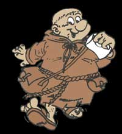

Forums galactiques > Taverne galactique : lieu de discussion informel > Heleas
| Mirade Réputation à la taverne : 57  26/12 ETU 12:18 | Score : 0 Détails "Bonjour tout le monde !!!"
Tiens... personne. Mirade avança dans la salle des jumelles dont elle avait entendu parler. Elle était belle et spatieuse : elle l'aima tout de suite ! Elle s'installa dans un siège, pensive. | ||
| Moine Bonneface Réputation à la taverne : 26  26/12 ETU 14:30 | Score : 1 Détails Un petit moine potelé poussa la porte du bar
Après un coup d’œil circulaire, destiné à estimer la taille de ce lieu en UPPI (Unité Pétanquiste Personnel Incompréhensible, système de mesure aussi variable que complexe), il avisa une fée installée dans un de ces confortables fauteuils Ah, bonjours Mirade, ça va ? Il s’approche Ça ne vous dérange pas si je m’installe a votre table ? Sans même attendre la réponse, il s’installe auprès d’elle. Alors, vous prenez quoi ? Se tournant vers le bar : Je voudrait un bol de bière, s’il vous plait. Se tournant vers Mirade : Oui, pasque les Pétanquiste boivent toujours au bol. La raison, c’est qu’a la fondation du Monastère, Gastron Petritot Letrouchar, le fondateur, au moment d’acheter la vaisselle pour la première fournée de moines, est tombé sur une super promo pour les bols, alors que les verres était hors de prix..... Il a aussitôt rajouté un alinéa à l’article 3 du code Monastique Pétanquiste : les moines pétanquistes ne peuvent ingérer de liquides que si ils sont bu au bol... S’apercevant soudainement qu’il monopolisait la conversation, pour en plus raconter des histoires fort peut passionnantes, il marqua une pause. (Pause marqué) Heu, sinon, tu raconte quoi de beau ? | ||
| Mirade Réputation à la taverne : 57 26/12 ETU 14:37 | Score : 1 Détails L'arrivée soudaine avait surpris Mirade qui somnolait (bon, ok elle dormait, mais chuuuut ^^)
"Hein ? Heu... Bonjour commandant !" A peine l'avait-il salué qu'il lui racontait une histoire de bol... (dur comme réveil !). "Au moins vous êtes de bonne humeur ! Ca fait plaisir à voir. Moi je vais très bien et puis, comme vous me le proposez si gentiment... je prendrai bien un... C'est quoi la boisson du jour ???" | ||
| Firefly Réputation à la taverne : 106  26/12 ETU 15:16 | Score : 0 Détails A thomas
Bonjour euh... on a eu l'occasion de faire connaissance? Moi c'est Ara, l'autre... euh ma soeur c'est Kailee. Kailee vers les deux autres Tiens, Bonjour vous, Vous allez bien? La boisson du jour est un cocktail de jus de fraises avec une touche de citron. Un bol de bière? Vous ne voudriez pas plutot une chope? Parce que un bol de bière, ce n'est pas courant. | ||
| Mirade Réputation à la taverne : 57 26/12 ETU 15:26 | Score : 0 Détails "Fraise et citron ???"
Mais pourquoi c'est pas l'autre qui m'a servit ??, se dit Mirade. Mais elle est bien aimable quand même...je vais y gouter à son cocktail, on sait jamais "Eh bien pourquoi pas la boisson du jour, c'est parti !" | ||
| Firefly Réputation à la taverne : 106 26/12 ETU 15:38 | Score : 0 Détails Je reviens de suite!
Kailee, je te prends les fraises. Je vais faire un cocktail, ou se trouvent-elles? Regarde dans le buffet, le troisième tiroir Kailee revient avec son cacktail dans les mains En fait, je n'ai pas trouvé de fraises, alors j'ai mis du sirop de framboise, et le citron, j'ai remplacé par du sirop de menthe. Goutez, avec un peu de chance ça sera bon. | ||
| Mirade Réputation à la taverne : 57 26/12 ETU 15:47 | Score : 0 Détails Kailee revint avec un cocktail d'une couleur... très appétissante !
"Franboise et Menthe ?? Eh bien, c'est partit pour le régal du jour !" c'est partit pour le suicide, oui !pensait-elle un, deux, trois... Et Mirade but d'une traite son cocktail... Oubli que tu n'aimes ni la framboise, ni la menthe ! Oubli, oubli, oubli ! Mais petit à petit, le visage crispé de Mirade redevint normal. Le goût était vraiment étonnant mais "Qu'est-ce que c'est bon !" | ||
| Moine Bonneface Réputation à la taverne : 26 26/12 ETU 16:05 | Score : 0 Détails Ah, je suis désolé, mais ma religion m’interdit la chope....
Vous avez bien un bol quelque part, non ? Pasque là, moi, sans vouloir être désobligent, j’attends toujours ma bière.... Enfin bon, ce n’est pas dramatique, en tant que moine, j’ai appris la patience. Ce tournant vers Mirade : Humm, dit donc, ça n’as pas l’air très bon votre cocktail.... Enfin, il en faut pour tout les goût, hein !! Remarque, ça ne peut pas être pire que la Cuvé Hivernal de la Bière Pétanquiste..... Franchement, je ne vous la conseil pas, et je sais de quoi je parle : c’est moi qui la fait.... Comme quoi, on ne peut pas être à la fois bon brasseur et bon joueur de Pétanquade..... | ||
| Yoh Réputation à la taverne : 390  26/12 ETU 16:14 | Score : 0 Détails Un adolescent entra dans le bar,arborant une allure de ninja.
Il était emmitouflé dans un manteau noir sans manche,et s'avança jusqu'à la table la plus proche. S'asseyant,il commanda: "Pourrais-je avoir une coup de saké,s'il vous plaît?" | ||
| Firefly Réputation à la taverne : 106 26/12 ETU 18:11 | Score : 0 Détails Meuh si qu'il est bon mon cocktail!
Essayez et goutez le donc! La direction n'est en aucun cas responsable de quelconque dommage occasionné à l'organisme Ara! Est-ce que tu peux aller chercher un sac de blé? Du saké Kailee, saké, c'est une boisson à base de riz fermenté. J'y vais tout de suite | ||
| andurinel Réputation à la taverne : 47 26/12 ETU 19:27 | Score : 2 Détails Un homme entre dans le bar à l'aparance et à la reputation fort sympatique, laissant deux gardes à l'entrée de la salle. Un nouveaux visage apparement. Il s'approche du comptoir et sort quelques Lems qu'il pose dessus
"La boisson la plus forte que vous ayez" Il s'assoit, prenant soin de laisser une place lire à ses cotés | ||
| Firefly Réputation à la taverne : 106 27/12 ETU 05:43 | Score : 0 Détails Bonjour monsieur.
Comment vous appelez-vous? Kailee, va chercher une bouteille de ginseng mélangé au gingembre, celle alcollisée stp. Tout de suite! | ||
| andurinel Réputation à la taverne : 47 27/12 ETU 11:18 | Score : 0 Détails L'homme se retourne doucement et sourit à la femme, designant le siege libre à ses cotés
"Vous pouvez m'appeler Andurinel. A qui ai-je affaire?" | ||
| Firefly Réputation à la taverne : 106 27/12 ETU 13:24 | Score : 0 Détails Je suis Ara, et celle qui est allé chercher votre boisson est ma soeur. Elle s'appelle Kailee.
D'ou vient votre nom? C'est pas très commun. | ||
| andurinel Réputation à la taverne : 47 27/12 ETU 13:35 | Score : 0 Détails Ara? Quel magnifique volatile que celui la...
Il toussote legerement, comme honteux de cette eventuelle plaisanterie Et bien, d'apres ce que j'en sais il est inspiré du nom d'un objet d'un ancien livre. Tres ancien. | ||
| Beth le cerf blanc Réputation à la taverne : 112  29/12 ETU 18:26 | Score : 0 Détails C'est ma seule Galaxie je faisait reference au fait que c'etait une premiere fois.
Beth était maintenant endormi sur la table | ||
| Beth le cerf blanc Réputation à la taverne : 112 13/01 ETU 18:17 | Score : 1 Détails Mini up
| ||
| Beth le cerf blanc Réputation à la taverne : 112 17/02 ETU 22:16 | Score : 1 Détails Après tellement d'absence, Beth passait dans le coin il courait après un homme.Il s'arrêta net devant la salle.
"Ah..." Beth entra dans la salle et constata que aucune poussière n'était ici, le ménage était apparemment fait quotidiennement, sûrement sur ordre de Ara.Il avança de quelques mètres et regarda autour de lui. "C'est ici alors, la table de la dernière fois." Beth s'asseya, la chaise était moelleuse, elle lui rappelait tant de souvenir.Il toucha la table de ses doigts, la texture était douce, c'était une table bien conçue et de bonne robustesse.D'un coup de poing rageur il frappa la table, en un éclair le visage de Beth se transforma. "Pourquoi...pourquoi?." Il resta assis quelques minutes en pensant a telles ou telles choses, puit se leva et se dirigea vers le bar ou était avant Kailee et Ara.Il enleva sa veste et la posa sur le dos d'une chaise.Au comptoir il murmurait. "Kailee..." Pendant plusieurs minutes il regardait la salle, dans les moindres détails, il sortit finalement dehors et s'asseya sur le banc ou a ce même endroit Kailee et lui avait passer un moment inoubliable. | ||
| Firefly Réputation à la taverne : 106 18/02 ETU 06:35 | Score : 0 Détails Ara vit Beth entrer pui sortir. Comme il n'y avait aucun clients elle se permit d'aller le voir un peu.
Bonjour Beth. Tu cherche Kailee je suppose... Elle fait la vaisselle... Attends que je l'appelle. Ara alla appeller Kailee, qui vint ensuite voir Beth. Bonjour Beth, tu va bien? Quel bon vent t'ammène ici? | ||
| Beth le cerf blanc Réputation à la taverne : 112 18/02 ETU 08:30 | Score : 0 Détails "Kailee!je suis si content de te voir!"
"Tu te souviens de moi?" Beth regardait de la tête au pied la belle Kailee,il la dévisageait presque.Il se tourna vers Ara "Elle ne se souviens pas de "sa" j'imagine..." Beth s'asseya sur le banc sans même attendre la réponse de Kailee. Il prit sa tête entre ses mains,passa sa main dans ses cheveux,puis se leva et se positionna devant Kailee. |
Forums galactiques > Taverne galactique : lieu de discussion informel > Heleas